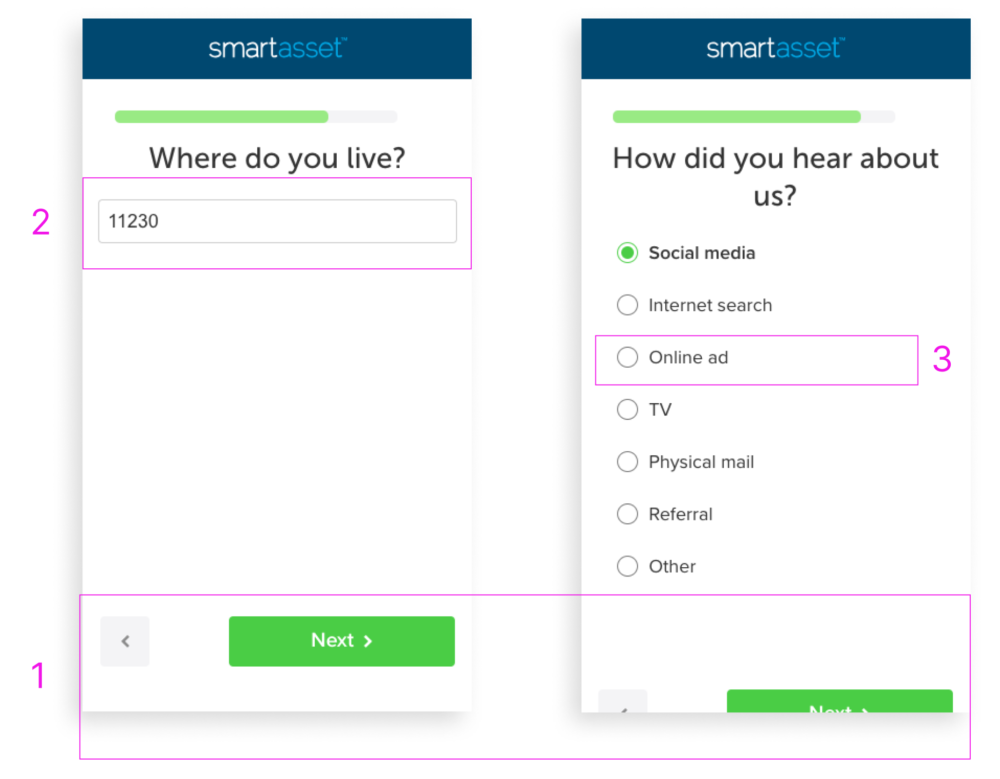

FUNNEL IMPROVEMENTS
Conversion Rate Optimization
PROJECT OVERVIEW

Ongoing improvements to SmartAsset’s matching service funnel to improve conversion rate (CVR).
- My Role & Responsibilities: UX Researcher & Front-End Developer; led all research initiatives focused on uncovering opportunity areas within the funnel and acted as primary developer for all front-end A/B tests
- Project Timeline: 12+ months
BACKGROUND
SmartAsset is the leading marketplace that connects consumers with financial advisors. Before 2021, our 25-30 panel funnel attracted over 30,000 consumers each month, resulting in matching with up to 3 advisors and an average conversion rate (CVR) of 2.9%. However, the substantial drop-off rate within the funnel indicated a clear opportunity for enhancement. Consequently, the Conversion Rate Optimization (CRO) team was assigned the goal of doubling SmartAsset's funnel CVR by 100% in 2021.
GOALS
Improve CVR by 100% through ongoing A/B testing (using Optimizely) of SmartAsset’s matching service funnel.
RESEARCH APPROACH
To gain a comprehensive understanding of our user base and evaluate the usability of the current funnel, we adopted a two-pronged research approach.
KEY TAKEAWAYSSmartAsset is the leading marketplace that connects consumers with financial advisors. Before 2021, our 25-30 panel funnel attracted over 30,000 consumers each month, resulting in matching with up to 3 advisors and an average conversion rate (CVR) of 2.9%. However, the substantial drop-off rate within the funnel indicated a clear opportunity for enhancement. Consequently, the Conversion Rate Optimization (CRO) team was assigned the goal of doubling SmartAsset's funnel CVR by 100% in 2021.
GOALS
Improve CVR by 100% through ongoing A/B testing (using Optimizely) of SmartAsset’s matching service funnel.
RESEARCH APPROACH
To gain a comprehensive understanding of our user base and evaluate the usability of the current funnel, we adopted a two-pronged research approach.
- Exploratory Research: Firstly, we conducted exploratory research to delve into the characteristics, behaviors, and needs of our users. This involved employing various methods, including consumer surveys, data analytics, and leveraging relevant industry research. The breakdown of this phase can be found below:
- Methods: Consumer surveys, data analytics, and industry data pull
- Objectives: Better understand our user base; identify opportunity areas for testing
- Deliverable: User personas
- Usability Inspection: Secondly, we performed a usability inspection to identify both the strengths and weaknesses of the existing funnel. To achieve this, we conducted a thorough UX expert review, examining the user experience from end to end. This evaluation helped us uncover usability problems and areas of improvement within the funnel. The breakdown of this phase can be found below:
- Methods: UX expert review and remote usability testing
- Objectives: Identify usability problems and strengths of current funnel
- Deliverable: List of UX/UI issues within the funnel
Exploratory Research
Two key consumer types were identified during the exploratory user research - the "Pre-Retiree" (primary) and the "Getting My Bearings" (secondary).
 The "Pre-Retiree" user segment represents a lucrative group of individuals who are less than a decade away from retirement and possess significant investable assets, making them highly eligible for collaboration with a financial advisor. These users exhibit a high level of knowledge and experience in investment, actively seeking guidance to ensure their long-term financial security. While they have successfully managed their finances thus far, they have reached a stage where they require additional expertise to sustain their momentum in the years leading up to retirement.
The "Pre-Retiree" user segment represents a lucrative group of individuals who are less than a decade away from retirement and possess significant investable assets, making them highly eligible for collaboration with a financial advisor. These users exhibit a high level of knowledge and experience in investment, actively seeking guidance to ensure their long-term financial security. While they have successfully managed their finances thus far, they have reached a stage where they require additional expertise to sustain their momentum in the years leading up to retirement.
These users are in the early stages of their search and are enthusiastic about engaging with an expert to gain clarity regarding their financial plans. However, the primary obstacle for this user segment is identifying the most suitable advisor who can meet their specific needs and establish trust in managing their hard-earned assets.
 The "Getting My Bearings" user segment was identified as a significant secondary segment, comprising over 40% of the funnel audience. While these individuals may not meet the requirements to work with a traditional financial advisor, they actively seek out financial advice. Our "getting my bearings" consumers are in the early stages of their financial journey, aiming to gain a better understanding of money management practices.
The "Getting My Bearings" user segment was identified as a significant secondary segment, comprising over 40% of the funnel audience. While these individuals may not meet the requirements to work with a traditional financial advisor, they actively seek out financial advice. Our "getting my bearings" consumers are in the early stages of their financial journey, aiming to gain a better understanding of money management practices.
This segment primarily focuses on building their savings and has modest financial goals. However, they face challenges due to limited disposable income and a lack of knowledge regarding where to begin and how to effectively save. Their main objective is to receive guidance on navigating their finances and growing their savings effectively.
Usability Inspection
The following UX/UI issues were uncovered during the expert review and extensive usability testing of the funnel experience:

- CTA Positioning: The placements of the call-to-actions (CTAs) were not consistent across the funnel experience and would move depending on the length of the question and the number answer options. A number of CTAs were even pushed below the fold on mobile.
- Button Design Treatment: The original design treatment of the CTAs and answer options gave the illusion of a much smaller clickable area slowing users down during the process.
- Default Keyboard: The text field panels (name, email, number, and zip code) did not default to the appropriate keyboards on mobile resulting in extra clicks to complete an action.
- Loading Screen: The loading screen, which occurs at the end of the funnel, was over 12 seconds long and gave no indication of timing or next steps.
A/B TESTS
The previously stated insights influenced a number of successful A/B tests in Optimizely including, but not limited to, the following:
- CTA Positioning: Standardized the CTA position on all devices, preventing any from going below the fold (3% improvement in CVR)
- Button Design Treatment: All buttons were given a border and enlarged to enhance the perceived clickable area (2.8% improvement in CVR)
- Default Keyboard: All text fields defaulted to the appropriate keyboard (e.g., phone number panel defaulted to the numeric keyboard) (1% improvement in CVR)
- Loading Screen: The duration of the loading screen was reduced by 50% to 6 seconds and new visual assets were added to highlight the value prop of the service (7% improvement in CVR)
RESULTS
Success! The CRO initiative saw a cumulative 95% increase in conversion in 2021, resulting in a new baseline conversion rate of 5.5%.
In addition, the insights gathered during this project have already informed the direction of the product roadmap for 2022 and beyond, with a number of “overhauls” to the current funnel experience scheduled for upcoming sprints including the implementation of branching, new question types (select all, ranking, “other” optionality, etc.), evaluating the matching algorithm to achieve “best fit matches”, and the development of the "getting my bearings" experience.
2023 UPDATE
The optimization of the funnel has consistently been a top priority, guided by research insights that have shaped our testing concepts since 2021. Our most recent findings have highlighted three key areas for improvement:
- Managing user expectations during the matching experience
- Effectively promoting our services to new users
- Enhancing UI accessibility, specifically on mobile devices
As the UX lead, I had the responsibility of overseeing the development and implementation of all UX-based A/B testing concepts within the SmartAsset funnel. In Q1 2023, we achieved a 33% success rate, resulting in a combined 4.68% increase in CVR, which equates to an estimated monthly revenue uplift of $585k. These impressive results demonstrate the positive impact of our UX initiatives on the overall performance of the funnel.